Costa lleva cinco derrotas seguidas en primera ronda.
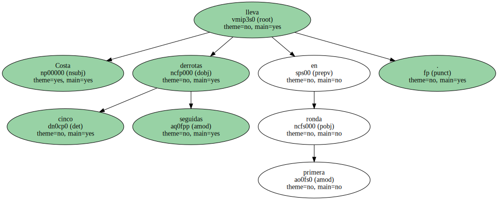Cuando un jugador baja la cabeza o tuerce el gesto de disgusto , es que las cosas no van bien.
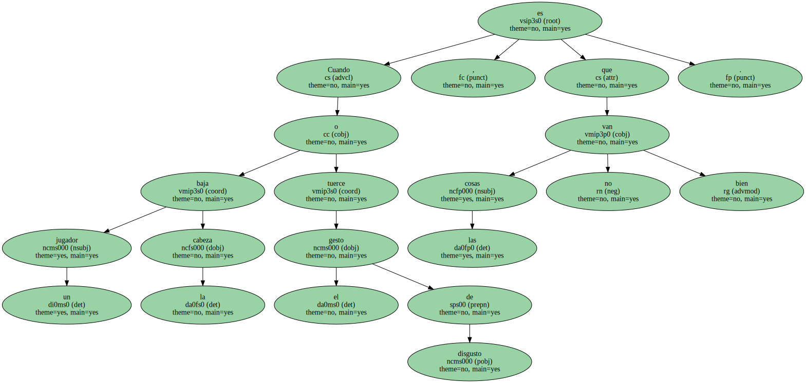Si arroja la raqueta al suelo o la hace volar por los aires , es que ya empieza a estar desesperado.
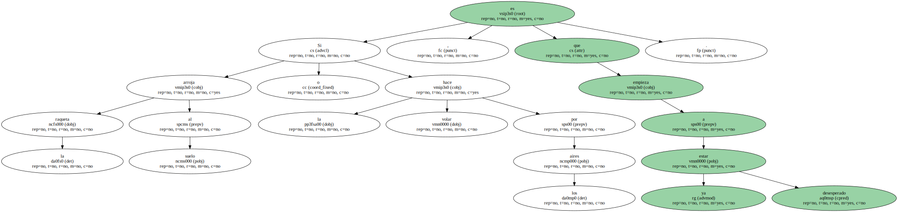Y cuando se grita a sí mismo , cuando se autoflagela a viva voz , significa que ahí hay un tenista a punto de perder un partido.
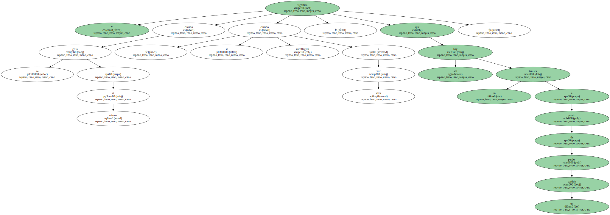" ¡ Estás jugando Fatal ! ¡ Fatal ! " , vociferó Albert Costa tras estampar otro golpe de revés a la red.
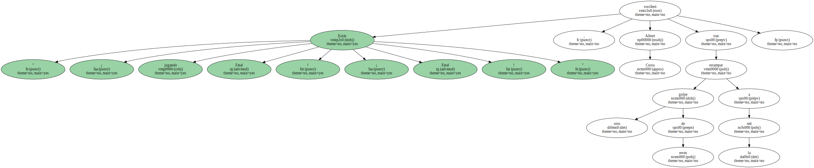Ciertamente , no jugó muy bien el leridano en su debut en el Abierto de EEUU.

se enteró su rival , el checo Daniel Vacek , todos los espectadores de la pista siete , y , dado el volumen de su lamento , se diría que se percataron hasta aquellos que degustaban por 900 pesetas una hamburguesa en una área de reposo no muy cercana.
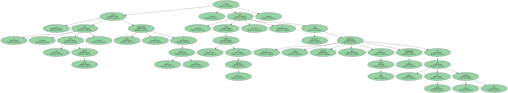El problema para Costa es que ya ha tenido que pegar estos gritos demasiado a menudo en Flushing Meadow.
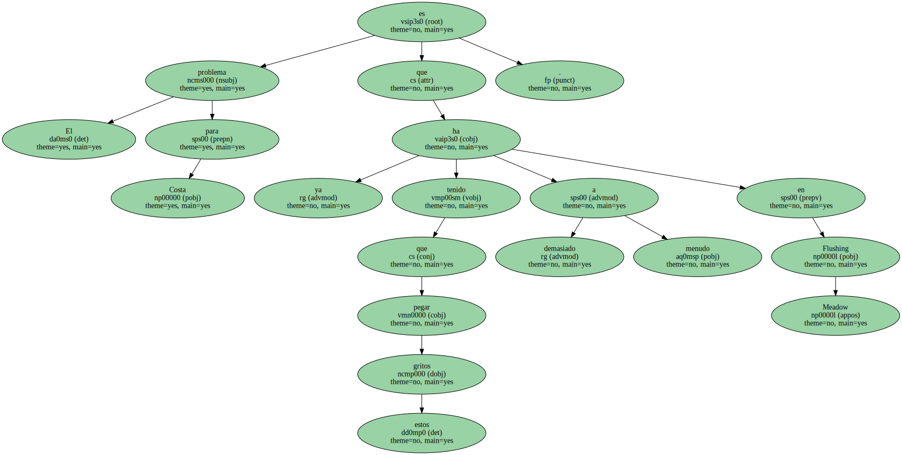Es su torneo maldito.
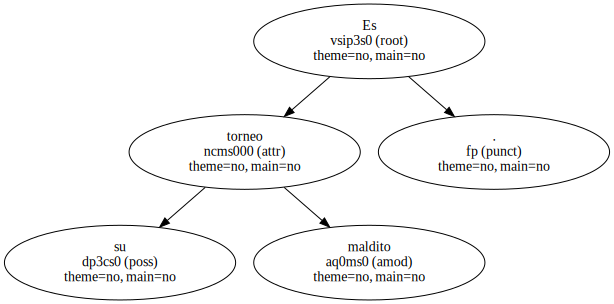No es normal que un jugador de élite como él , que suele acampar entre los 20 primeros del ranking , sea eliminado en primera ronda las cinco veces que ha competido en las pistas neoyorquinas.
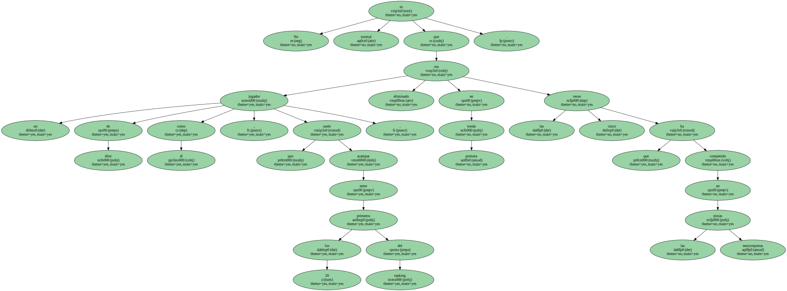" ¡ Aquí no rasco una ! " , admitió después de perder ante Vacek en tres sets.
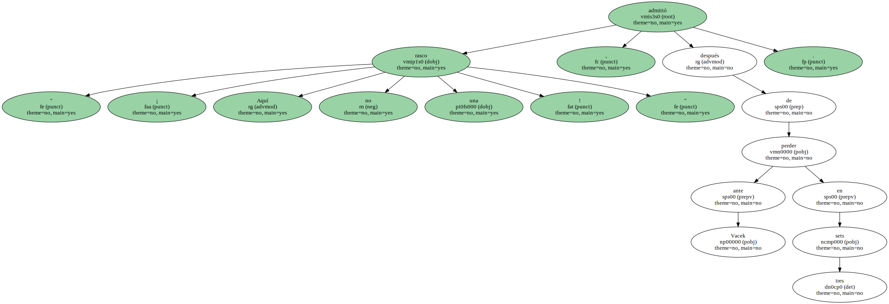Y eso que este año tenía confianza.
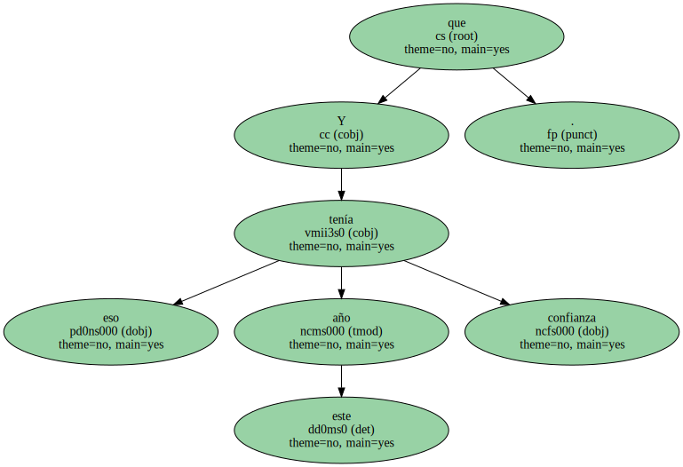" estaba entrenando bien , me sentía fuerte ... " , decía.
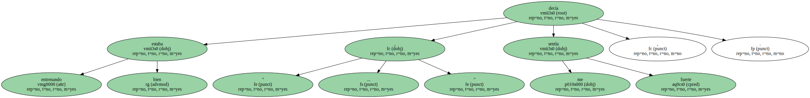Incluso estaba impaciente por disputar el partido de estreno.
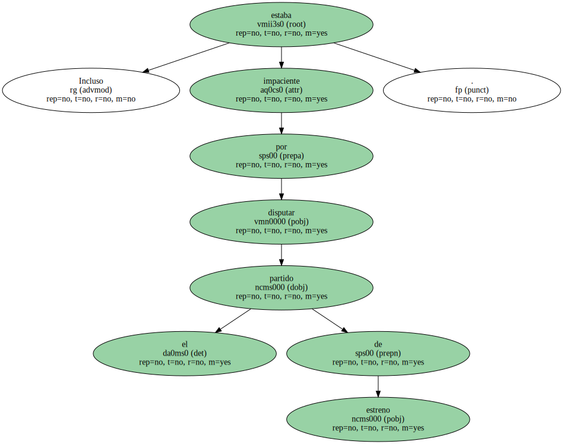De hecho , no quería ni esperar al segundo o al tercer día.
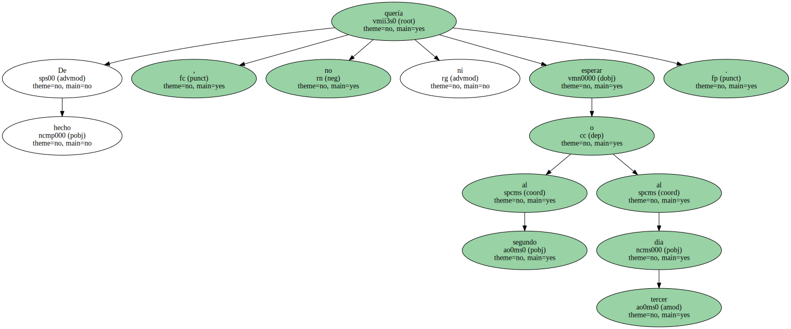Quería debutar cuanto antes.
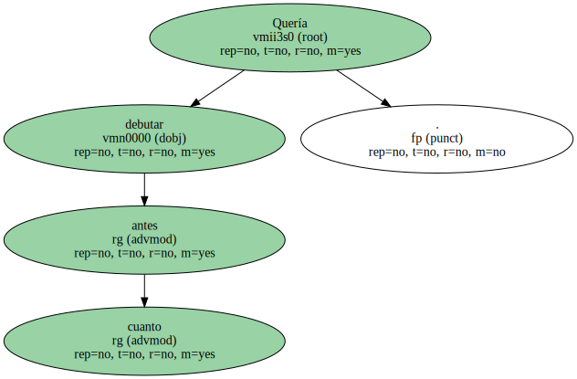" Llevas toda la vida queriendo jugar aquí ... ¡ y ahora te vendrá de dos días ! " , le espetó el Sábado su técnico , Josep Perlas.
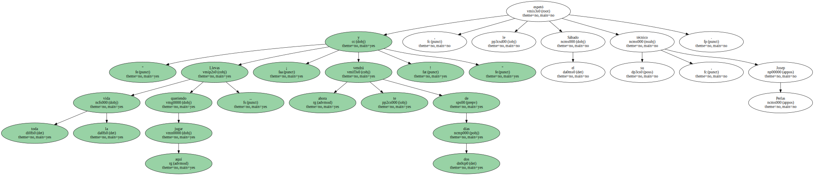¿ Fueron esas desmesuradas ganas las que le llevó a cometer errores no deseados ?.
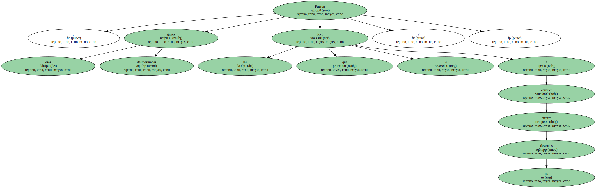" No , para nada " , respondía Albert.
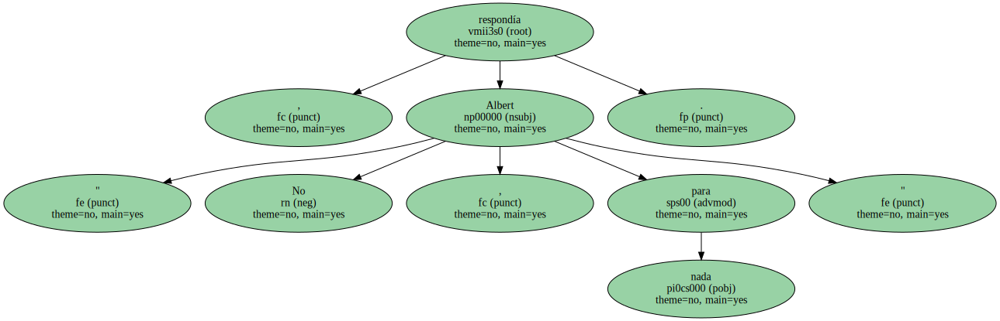¿ Fue esa obsesión por pasar una primera ronda ?.
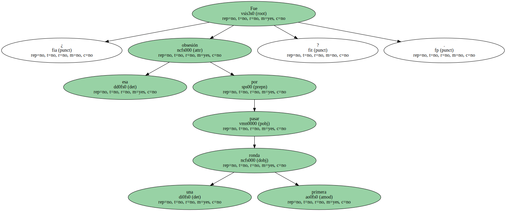" No , no puedes obsesionarte . Cada año son circunstancias distintas ".
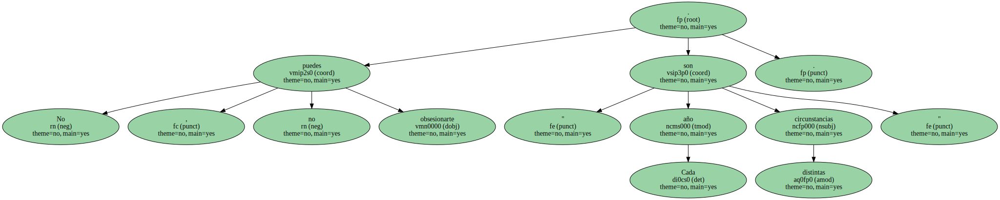¿ El año que pases una ronda , será una celebración ?.
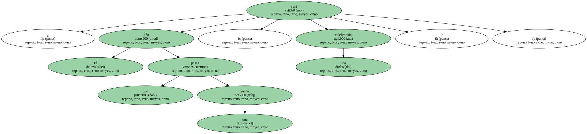" El año que pase una ronda , igual ya paso cuatro o cinco de carrerilla ".
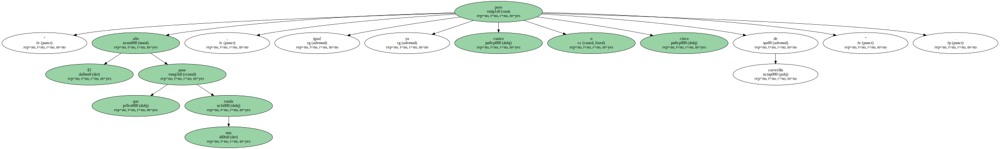El próximo , quizá.
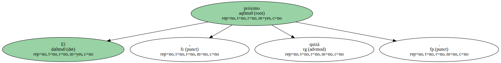